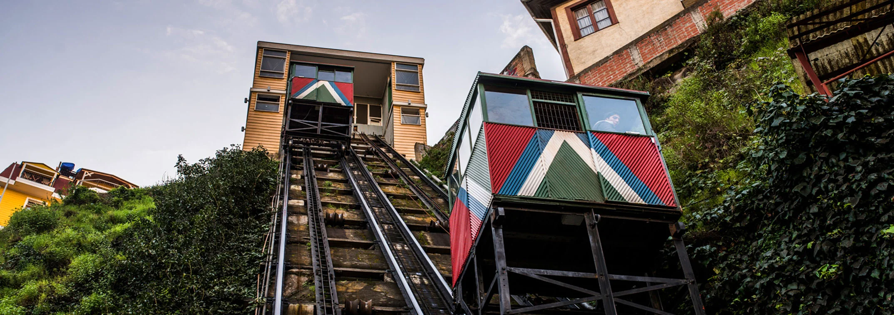

Panoramas
en Valparaíso
Una selección de lugares y experiencias para recorrer Valparaíso, descubrir sus cerros, su patrimonio y distintos espacios de encuentro.
Conocer más ↗Playas y
Miradores y
cerros
Cultura y
patrimonio
Cafés y
encuentro
03 / Patrimonio
Ascensor
Ascensor
Reina Victoria
Inaugurado en 1903, el Ascensor Reina Victoria forma parte del patrimonio histórico de Valparaíso. Su recorrido conecta el plan con el sector de Cerro Alegre y permite experimentar una de las formas de movilidad más características de la ciudad.
Descubrir el lugar ↗